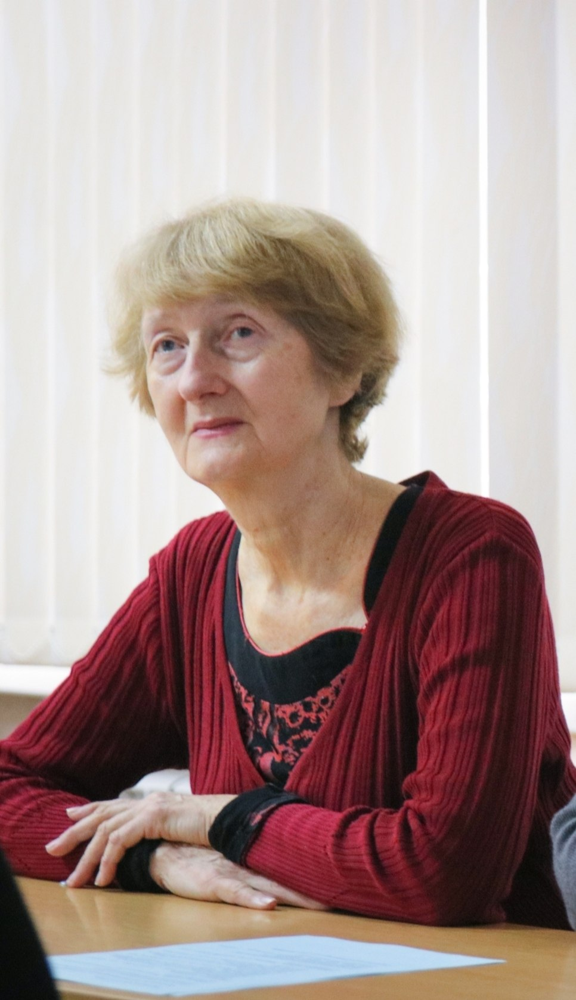
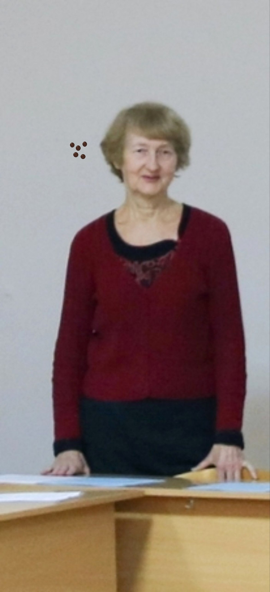
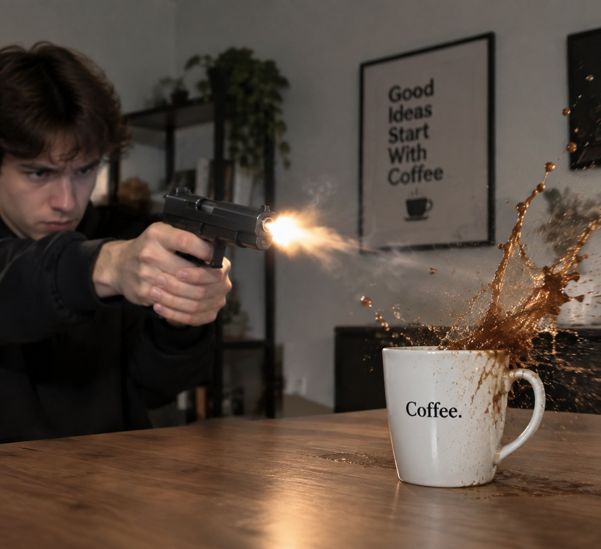
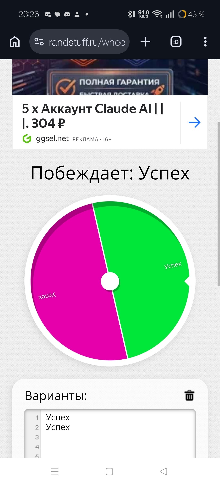
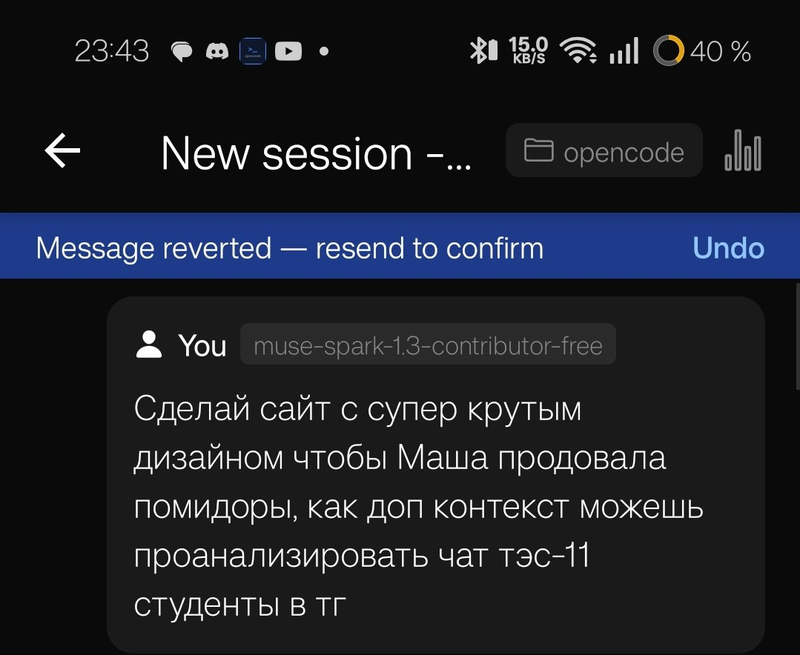

Всё великое из группы — в одном месте. Нажми на картинку, чтобы растянуть. Шли новый шлак — повешу сюда.
🤠 Доска розыскаОриентировка с 1 этажа. Награда — 5 помидоров за каждого.🐰 Ава группыИнформатик в маске зайца. Канон.

⚗️ Физика + химияВера Спиридоновна, портрет. Один человек, два предмета.

📐 У доскиТа же Вера Спиридоновна, полный рост. Кабинеты 114, 103, 307 — везде она.

🔫 Босс ИИСахарная война, 15.09. 4–5 ложек — идеал, меньше нет. Чифир ебаный получается.

🎡 Колесо УспехаВсе варианты — «Успех». Варианта неуспеха нет, вселенная настроена.

📜 ГенезисПервый промпт: «Маша продовала помидоры». Всё, что просили, — вот так.🍬 Кисло-сладкий фронтХвост сахарной войны. «Мне просто противно от сладкого».